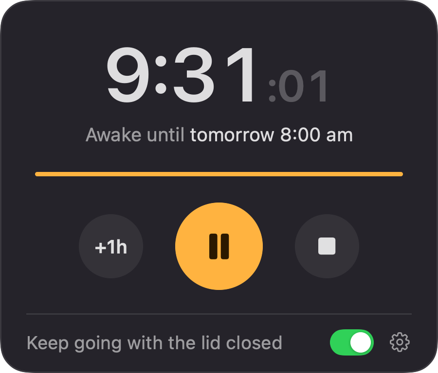
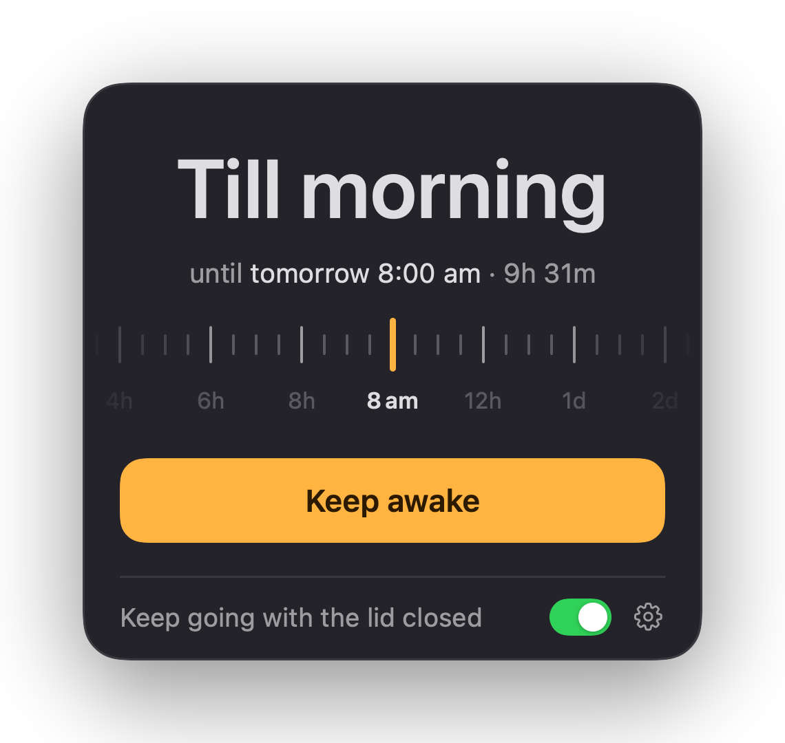
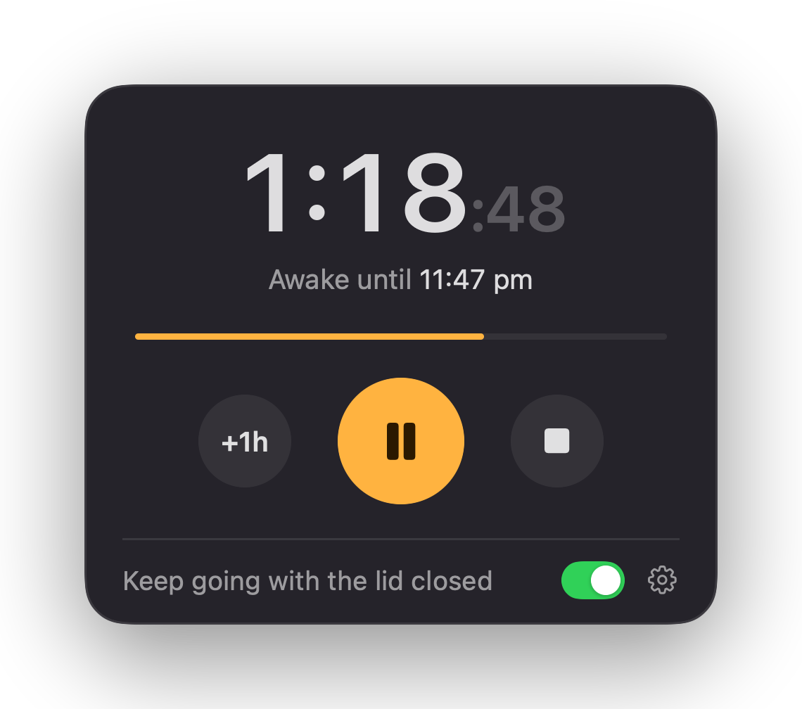
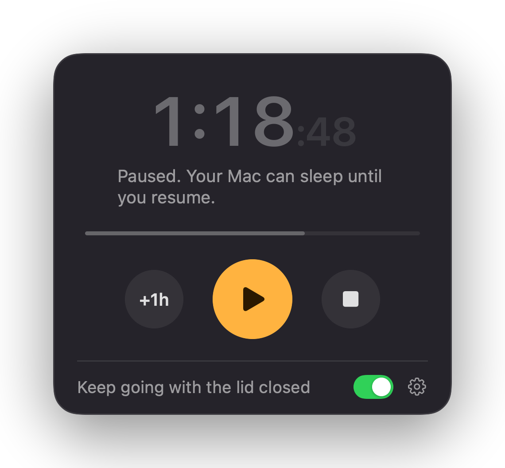

Close your MacBook. Whatever's running keeps running.
Free and open source, for macOS



Drag the ruler. 8 am is always one of the stops.
While it runs, the countdown is all you see.
Pause, and your Mac can sleep until you resume.
An eye under a lid. The lid comes down as your time runs out.
Off
Just started
Halfway
Almost done
Paused
Close your MacBook. Whatever's running keeps running.